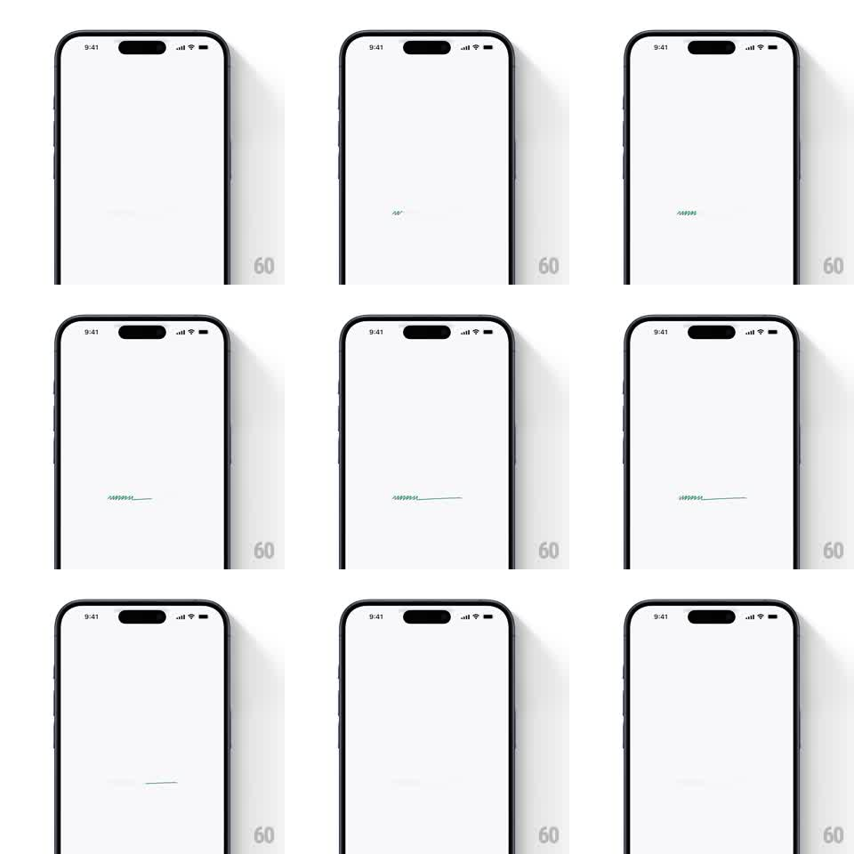

Media
Frame-by-frame

Rebuild this animation 1:1: Superlist's loading line - a hand-drawn green squiggle travels left to right along a hairline at screen center, drawing the line behind it, then everything fades and the loop restarts.

Rebuild this animation 1:1: Superlist's loading line - a hand-drawn green squiggle travels left to right along a hairline at screen center, drawing the line behind it, then everything fades and the loop restarts. ## Integration Integration: stack-agnostic spec - springs given as stiffness/damping, timed motions as duration + curve; map every value to your framework and animation library of choice. ## Scene Superlist loader, near-white: an empty screen with a single short green stroke at the vertical center - a tight scribble that becomes a thin drawn line as it moves. ## Motion spec Pattern: traveling squiggle that draws its own path. - The squiggle (a small dense scribble, ~24px wide) appears at center-left and travels right along a perfectly horizontal path over ~1.2s, ease-in-out. - As it moves it leaves a thin hand-drawn line (1.5px, same green) in its wake - the line extends from the squiggle's start point to its current position, with slight organic waviness (+/-1px) so it reads as drawn, not rendered. - The squiggle itself wriggles as it travels - the scribble rotates/scales subtly at ~8Hz, like a pen scribbling in place while sliding. - At the end of the path the squiggle and line hold 200ms, then fade out together (300ms) and the loop restarts from the left. - Total cycle ~2s; the line's final length is ~120px - short and centered, never edge to edge. ## Calibration - One green only - the exact Superlist green, flat, no gradient. - The line's waviness is per-frame stable - it must not shimmer once drawn. ## Reduced motion A static short line that pulses opacity (0.4 -> 1 -> 0.4, 1.5s). ## Don't miss - The squiggle leads, the line follows - the draw-on is the whole point; don't render the full line first. - The loop's restart has a clear ~400ms gap of empty screen - breathing room.